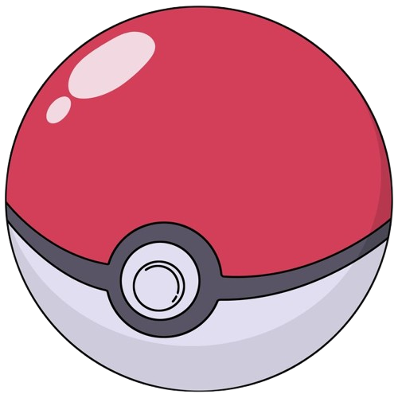
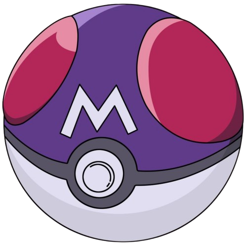
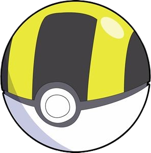

Poke Ball

Master Ball

Poké Ball adalah alat penting dalam dunia Pokémon yang digunakan untuk menangkap dan menyimpan Pokémon liar. Poké Ball memiliki desain khas berbentuk bola dengan warna utama merah dan putih, serta terdapat tombol di bagian tengahnya yang digunakan untuk membuka atau menutup bola.
Poké Ball berfungsi sebagai wadah portabel yang dirancang untuk memampatkan dan menyimpan Pokémon dalam ukuran yang lebih kecil, memungkinkan pelatih Pokémon membawa banyak Pokémon sekaligus. Setiap jenis Poké Ball memiliki kemampuan dan fitur unik yang memudahkan proses penangkapan Pokémon.
Poké Ball digunakan untuk menangkap berbagai jenis Pokémon. Ada berbagai variasi Poké Ball yang disesuaikan dengan situasi tertentu, seperti Ultra Ball untuk penangkapan yang lebih kuat atau Net Ball untuk Pokémon bertipe air dan serangga
Ultra Ball adalah jenis Poké Ball yang memiliki tingkat efektivitas lebih tinggi dibandingkan dengan Poké Ball standar dan Great Ball. Dengan tingkat tangkap dua kali lebih besar dari Poké Ball biasa, Ultra Ball meningkatkan peluang pelatih untuk menangkap Pokémon liar, terutama yang memiliki tingkat tangkap rendah atau yang lebih sulit dijinakkan. Ultra Ball sangat berguna ketika pelatih berada dalam situasi mendesak atau saat menghadapi Pokémon yang kuat di alam liar, karena memberikan modifikasi tangkap 2x.
Ultra Ball adalah salah satu alat yang sering digunakan oleh para pelatih di tingkat lanjutan, dan biasanya tersedia di toko Pokémon (Poké Mart) dengan harga lebih tinggi daripada Poké Ball dan Great Ball. Meski tidak sekuat Master Ball, Ultra Ball tetap menjadi pilihan yang sangat efektif ketika Master Ball tidak tersedia atau ingin disimpan untuk Pokémon yang lebih sulit atau langka.
Master Ball, di sisi lain, adalah Poké Ball yang sangat kuat dengan tingkat tangkap sempurna, artinya dapat menangkap Pokémon liar apa pun tanpa gagal. Ini membuat Master Ball menjadi barang yang sangat berharga dan biasanya diberikan dalam jumlah yang sangat terbatas selama perjalanan seorang pelatih Pokémon. Karena sifatnya yang pasti menangkap, pelatih cenderung menyimpannya untuk Pokémon legendaris atau yang sangat langka yang sulit ditangkap menggunakan Poké Ball jenis lain.
Dalam lore Pokémon, Master Ball digambarkan sebagai teknologi yang sangat sulit diproduksi dan sangat jarang. Alasan ini menjelaskan mengapa Master Ball tidak tersedia secara komersial di Poké Mart, dan pemain hanya mendapatkannya melalui peristiwa tertentu atau dari karakter penting dalam permainan. Efektivitas dan eksklusivitas Master Ball menjadikannya Poké Ball yang paling diinginkan di kalangan pelatih Pokémon.